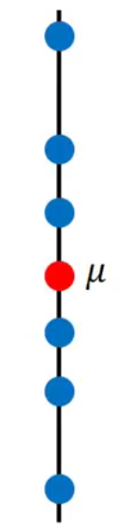
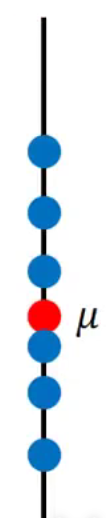
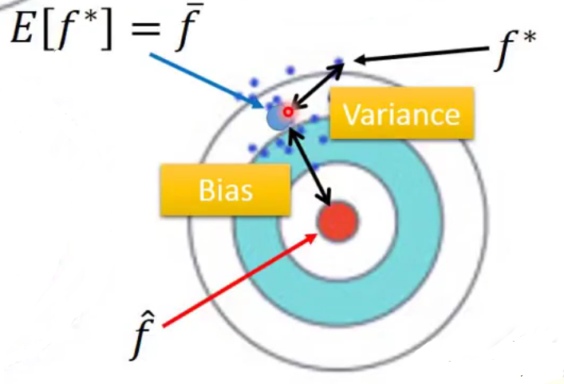

TASK03 - P5+6+7+8

P5 误差从哪里来
by Hung-yi Lee - Machine Learning 2017 - P5 误差从哪里来
Q：Where does the erro come from？
A：来自于 1. bias 2. variance
如果你能诊断你error的来源，那你就有适当的办法improve你的model

Estimator
下文将会提及：
| 真实函数 | 预估函数 | 平均函数 |
|---|---|---|
| f^ (f head) | f* (f star*) | E[f*] = f- (f bar) |
将以 打靶 为例子进行展开：
- 真实函数 f^ 为 靶心
- 估测函数 f* 为 尝试打靶击中的位置
- 其之间的差距 = Bias + Variance
1. 理论统计学例子：
预测未知数x的均值
- 假设1 其均值为 μ
- 假设2 其方差为 σ2
- 假设3 N 个sample点 { x1, x2, x3,…,xN }
Estimator of 均值 μ ： unbiased estimator
m = 1/N * Σ xn ≠ μ
Var[m] = σ2/N，方差取决于sample数量N，N大时 m的方差小
虽然 m ≠ μ，但 E[m] 会正好等于μ均值 m N 数少 N 数大 
  Estimator of 方差 σ2
m = 1/N * Σ xn，再计算 s2=1/N*Σ(xn-m)2 ≠ σ2Biased estimator:
E[s2] = (N-1) / N * σ2，既考虑了m又考虑了σ
2. 到底 bias 和 variance 是什么？
| 以下表靶图逻辑 | |
|---|---|
| Bias | 靶心(f^) 和 预估预测函数的平均函数(f_) 的距离 |
| Variance | 预估预测函数(f＊) 和 平均函数(f_) 的离散程度 |
| Diagram |  |
example 1 prerequisite
- 训练集设置：
- VARIANCE: 每组训练集为10个，一共有100组，分别做regression：
- BIAS: 每组训练集为100个，一共有5000个regression model：
- Colored curves：
- Red:
f * - Blue: avg(
f *)=f_ - Black: (assumed) true
f^
- Red:
| Model | VARIANCE | BIAS | |
|---|---|---|---|
| 简单model：一次幂 y = b + wxcp |
 |
 |
|
| 三次幂 y = b + w1xcp+w2(xcp)2+w3(xcp)3 |
 |
 |
|
| 复杂model：五次幂 y = b + w1xcp+w2(xcp)2+w3(xcp)3+w3(xcp)4+w5(xcp)5 |
 |
 |
总结
| 简单model | 复杂model | |
|---|---|---|
| Variance | Var较小，表现为收敛 | Var较大，表现为发散 |
| Solution | 1. 增加data （很有效控制var的方法，但collect data很难） 2. 正则化regularization （+λ·Σ(wi)2 曲线越平滑越好，但可能会伤害bias） |
|
| Bias | Bias较大，表现为离真实f^越远 简单model范围小可能根本没有包含target |
Bias较小，表现为离真实f^越近 简单model范围大包含target |
| Solution | Redesign the model: 1. 更多参数 2. 更多幂次 |
那么，在回顾之前一课中error在第三次幂中会突然转变error，需要对error进行分类：
- 红线是bias变化，绿线是var变化
- 从左到右分别是
Underfitting: 大bias+小vars到Overfitting: 小bias+大vars
所以在做完machine learning的时候，都要问自己：到底是bias大还是var大？
- 当model无法吻合training data → bias大 即underfitting
- 当model吻合training data，却在testing data有很大error → var大 即overfitting
3. Training data 和 Testing data 如何分配
- 基本事实
training set→public testing set→private testing set
training set较好的（error越小的）model在public set上可能较好表现后，在private set的表现较差。
法1：Cross Validation 交叉校准
- 把training set分成两部分：
TRAINING SET=Training set A+Validation set B - 在
Training set A上train完之后用Validation set B去选择model - 但原本的training data会因此减少，所以在步骤2中最终选择完了model后，再用全部的
TRAINING SET在选择好的model基础上再train一次data - 此时的public testing set和private testing set的结果可以相近
不推荐！ 把public testing set回头把training set的再校准一次，这样做会把testing set的bias又带到原来的model去。又会把public set校准表现得比private set好。
- 把training set分成两部分：
法2：N-fold Cross Validation N折交叉校准
把TRAINING SET分成 N 组，例子如下：
分三份，一份validation，两份training，分别组合：
TRAINING SET
1 TR1 TR2 VAL → model 1, 2, 3,… ↓
2 TR1 VAL TR2 → model 1, 2, 3,… → min(相同model的avg error)
3 VAL TR1 TR2 → model 1, 2, 3,… ↑
P6 梯度下降 Gradient Descent
by Hung-yi Lee - Machine Learning 2017 - P6 梯度下降